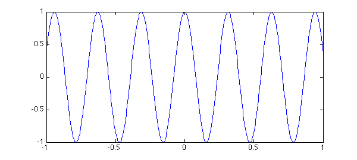
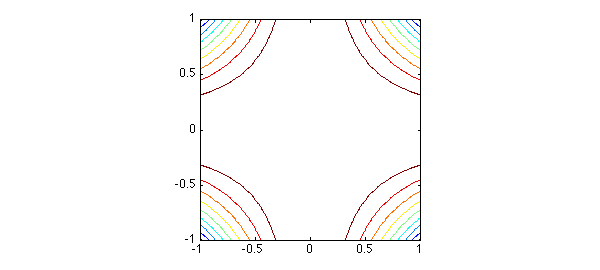
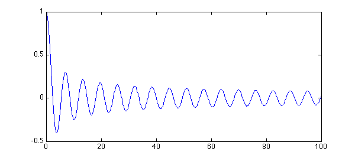
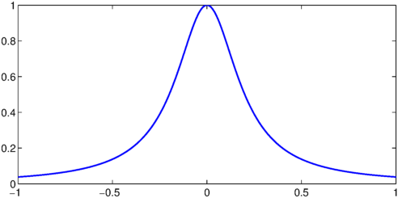

1.1 What is a chebfun2?
A chebfun2 is a function of two variables defined on a rectangle $[a,b]\times[c,d]$. The syntax for chebfun2 objects is similar to the syntax for matrices in Matlab, and Chebfun2 objects have many Matlab commands overloaded. For instance, trace(f) returns the sum of the diagonal entries when $f$ is a matrix and the integral of $f(x,x)$ when $f$ is a chebfun2.
Chebfun2 builds on Chebfun's univariate representations and algorithms. It is the first extension of Chebfun to functions of two variables. Algorithmic details are given in [Townsend & Trefethen 2013b].
The implementation of Chebfun2 exploits the observation that many functions of two variables can be well approximated by low rank approximants. A rank $1$ function is of the form $u(y)v(x)$, and a rank $k$ function can be written as the sum of $k$ rank $1$ functions. Smooth functions tend to be well approximated by functions of low rank. Chebfun2 determines low rank function approximations automatically by means of an algorithm that can be viewed as an iterative application of Gaussian elimination with complete pivoting [Townsend & Trefethen 2013].
The underlying function representations are related to work by Carvajal, Chapman and Geddes [Carvajal, Chapman, & Geddes 2008] and others including Bebendorf [Bebendorf 2008], Hackbusch, Khoromskij, Oseledets, and Tyrtyshnikov.
1.2 What is a chebfun2v?
Chebfun2 can represent scalar valued functions, such as $\exp(x+y)$, and vector valued functions, such as $[\exp(x+y);\cos(x-y)]$. We represent vector valued functions as chebfun2v objects, and these are useful for computations of vector calculus. For information about chebfun2v objects and vector calculus, see Chapters 5 and 6 of this guide.
1.3 Constructing chebfun2 objects
A chebfun2 is constructed by supplying the Chebfun2 constructor with a function handle or string. The default rectangular domain of a chebfun2 is $[-1,1]\times [-1,1]$. (An example showing how to specify a different domain is given at the end of this chapter.) For example, here we make a chebfun2 representing $\cos(xy)$ on $[-1,1]\times[-1,1]$ and then plot it.
f = chebfun2(@(x,y) cos(x.*y)); plot(f), zlim([-2 2])

There are several commands for plotting a chebfun2, including plot, contour, surf, and mesh. Here is a contour plot of $f$:
contour(f), axis square

One way to find the rank of the approximant used to represent $f$ is the following:
length(f)
ans =
6
Alternatively, more information can be given by displaying the chebfun2 object:
f
f =
chebfun2 object: (1 smooth surface)
domain rank corner values
[ -1, 1] x [ -1, 1] 6 [0.54 0.54 0.54 0.54]
vertical scale = 1
The corner values are the values of the chebfun2 at $(-1,-1)$, $(-1,1)$, $(1,-1)$, and $(1,1)$, in that order. The vertical scale is used by operations to aim for close to machine precision relative to that number.
1.4 Basic operations
Once we have a chebfun2, we can compute quantities such as its definite double integral:
sum2(f)
ans = 3.784332281468732
This matches well the exact answer obtained by calculus:
exact = 3.784332281468732
exact = 3.784332281468732
We can also evaluate a chebfun2 at a point $(x,y)$, or along a line. When evaluating along a line a chebfun is returned because the answer is a function of one variable.
Evaluation at a point:
x = 2*rand - 1; y = 2*rand - 1; f(x,y)
ans = 0.652014593874431
Evaluation along the line $y = \pi/6$:
f(:,pi/6)
ans =
chebfun row (1 smooth piece)
interval length endpoint values
[ -1, 1] 13 0.87 0.87
Epslevel = 7.797936e-15. Vscale = 1.
There are plenty of other questions that may be of interest. For instance, what are the zero contours of $f(x,y) - .95$?
r = roots(f-.95); plot(r), axis square, title('Zero contours of f-.95')
What is the partial derivative $\partial f/\partial y$?
fy = diff(f,1,1); plot(fy)

The syntax for the diff command can cause confusion because we are following the matrix syntax in Matlab. We also offer diffx(f,k) and diffy(f,k) which differentiate $f(x,y)$ $k$ times with respect to the first first and second variable, respectively.
What is the mean value of $f(x,y)$ on $[-1,1]\times[-1,1]$?
mean2(f)
ans = 0.946083070367183
1.5 Chebfun2 methods
There are over 100 methods that can be applied to chebfun2 objects. For a complete list type:
methods chebfun2
Methods for class chebfun2: SmallExamples gradient qr abs horzcat quad2d cdr imag quiver chebfun2 integral quiver3 chebpoly2 integral2 rank chebpolyplot isempty rdivide chebpolyplot2 isequal real chebpolyval2 isreal restrict chol iszero roots complex jacobian simplify conj lap sin constructor laplacian singleSignTest contour ldivide sinh contourf length size cos log sph2cart cosh lu sphere ctranspose max sqrt cumprod max2 squeeze cumsum mean std cumsum2 mean2 std2 dblquad median subsref del2 min sum diag min2 sum2 diff minandmax2 surf diffx minus surface diffy mldivide surfacearea discriminant mrdivide svd display mtimes tan domainCheck norm tand ellipsoid normalizePivots tanh exp normalizeRowsAndCols times feval pivotplot trace fevalm pivots transpose flipdim plot uminus fliplr plus uplus flipud pol2cart vertcat fred potential volt get power waterfall grad prod Static methods: chebpts2 outerProduct coeffs2vals vals2coeffs
Most of these commands have been overloaded from Matlab. More information about a Chebfun2 command can be found with help; for instance
help chebfun2/max2
MAX2 Global maximum of a CHEBFUN2.
Y = MAX2(F) returns the global maximum of F over its domain.
[Y, X] = MAX2(F) returns the global maximum in Y and its location X.
For certain problems this problem can be slow if the MATLAB Optimization
Toolbox is not available.
See also MIN2, MINANDMAX2.
1.6 Object composition
So far, in this chapter, chebfun2 objects have been constructed explicitly via a command of the form chebfun2(...). Another way to construct new chebfun2 objects is by composing them together with operations such as '+', '-', '.*', and '.^'. For instance,
x = chebfun2(@(x,y) x, [-2 3 -4 4]); y = chebfun2(@(x,y) y, [-2 3 -4 4]); f = 1./( 2 + cos(.25 + x.^2.*y + y.^2) ); contour(f), axis square

1.7 What to do now
To find out more about Chebfun2 you can continue reading this guide, or have a look at the Chebfun2 Examples. This guide and the Chebfun2 Examples are written as publishable m-files. For example, you can publish this chapter of the guide by typing publish('guide1.m').
1.8 References
[Bebendorf 2008] M. Bebendorf, Hierarchical Matrices: A Means to Efficiently Solve Elliptic Boundary Value Problems, Springer, 2008.
[Carvajal, Chapman, & Geddes 2008] O. A. Carvajal, F. W. Chapman and K. O. Geddes, Hybrid symbolic-numeric integration in multiple dimensions via tensor-product series, Proceedings of ISSAC'05, M. Kauers, ed., ACM Press, 2005, pp.84-91.
[Townsend & Trefethen 2013] A. Townsend and L. N. Trefethen, Gaussian elimination as an iterative algorithm, SIAM News, March 2013.
[Townsend & Trefethen 2013b] A. Townsend and L. N. Trefethen, An extension of Chebfun to two dimensions, SIAM Journal on Scientific Computing, 35 (2013), C495-C518.